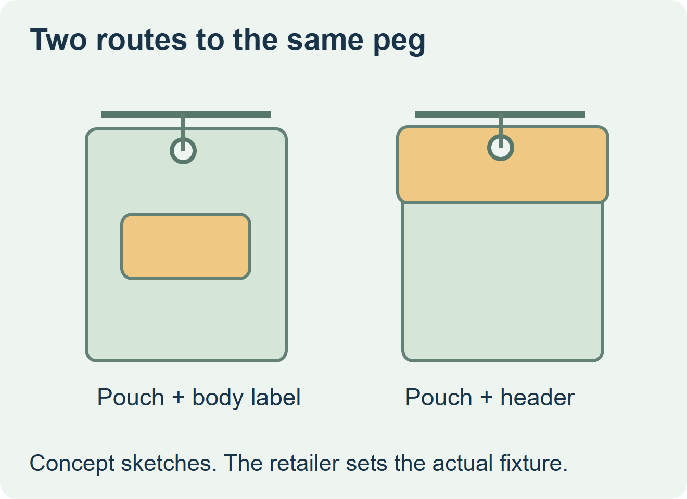
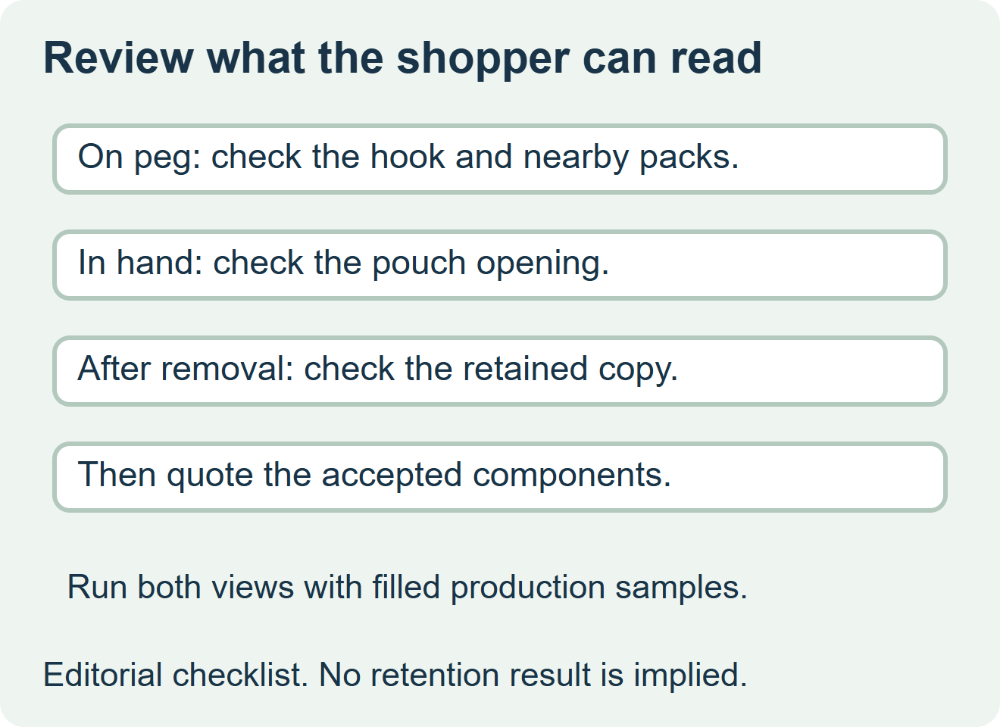

Keep a body label when the stock pouch already hangs securely on the approved fixture and its front panel remains readable there. Compare a printed header card when the retailer needs a different hanging arrangement or a larger facing area at the top. Approve the card, its attachment and the filled sealed pouch as one display package.


Find out which part supports the filled bag
Ask the retailer for the actual peg or fixture and ask the pouch supplier which portion of the pack is designed to hang. With a stock hanging pouch, obtain the approved hole and seal drawing. With an attached header, ask how it transfers the weight of the bag to the hook. Preserve the packer’s approved closure and access to the normal opening. Have the packer review any proposed fastening before it can affect the sealed product compartment.
Hercule Industrial describes folded paperboard headers with mirrored holes and a separate fastening method, including examples for confectionery and snacks. Ask the header supplier to identify the actual board, folded shape and attachment it can supply. The supported load, shelf performance and assembly time depend on the complete pack. Hercule Industrial header-card construction
| Current package and display need | First route to quote | Proof to approve |
|---|---|---|
| Pouch already hangs correctly and the body panel can carry the artwork | Body label on the approved stock pouch | Loaded display, readable face and normal opening. |
| The display needs a separate header or more printed area above the bag | Printed header with an identified attachment | Complete filled pack, hook fit, retention and information placement. |
| The header may detach while pouch information must remain | Header for approved display copy plus a body label | Both display and removed views, with the content owner’s approved allocation. |


Approve the hanging view and the view in hand
Place filled samples on the real fixture with neighboring packs. Observe any rotation or sag, hook interference, blocked print and the space needed to remove one pack. Then inspect the pouch in hand after the expected opening or header removal. Ask the product information owner which copy must remain with the pouch. Keep that material in the approved panel before allocating extra copy to a removable header.
In a hypothetical confectionery launch, a common sealed hang-hole pouch fits the peg but the candy settles toward one end. Test the body-label position on naturally settled samples. If a printed header is instead proposed for a broader brand facing, check the same pouches after the top assembly is fitted and removed in the expected handling sequence. Review any tear or slip with the packaging supplier before buying the full run.
Compare cost for the accepted displayed pack
Ask each supplier to identify the component included in its offer, the number of versions, and any separate tooling, folding or application work. The buyer should compare the whole assembly and usable quantity. ZFU can review an exterior pouch label requirement. Header-card supply and attachment work require project-specific confirmation from the relevant supplier.
Discuss the unresolved label requirement
Send the filled sealed pouch, actual hook or fixture drawing, header or hanging hole, seal and opening map, copy that should remain on the pouch, and quantities by SKU. Review food label options and prepare a label specification inquiry. The contact page opens an email draft and lists email or WhatsApp for attachments. Supply, proof options, testing, pricing and timing require project confirmation.